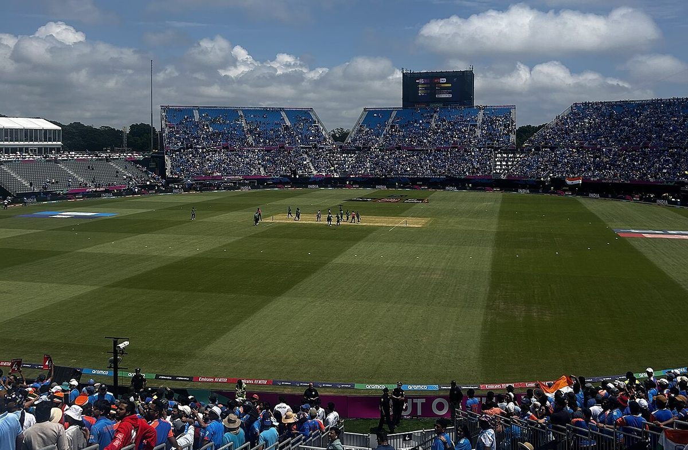
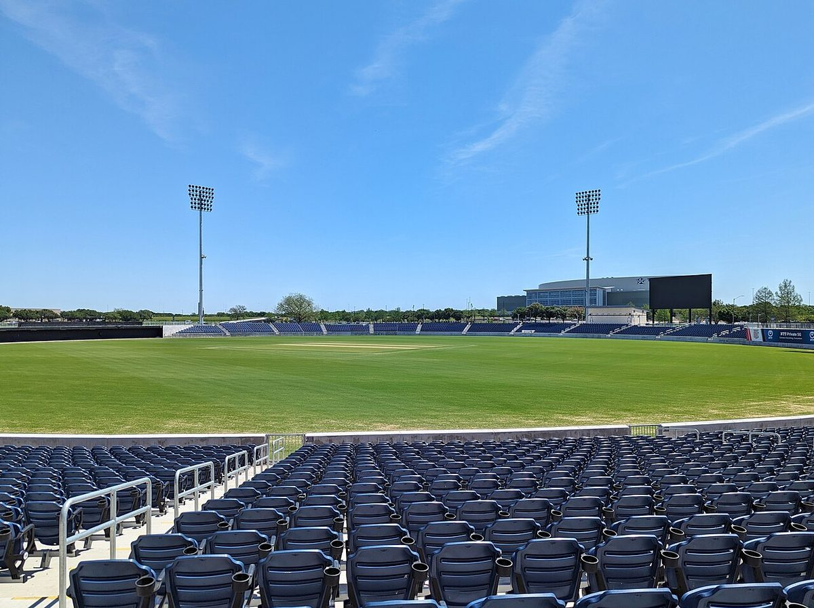

США и Вест-Индия — главные претенденты на проведение мужского Кубка мира T20 2034 года
По информации The Guardian, турнир запланирован на июль-август, и совместная заявка Северной Америки и Карибского бассейна считается приоритетной.

США и Вест-Индия рассматриваются в качестве основных кандидатов на совместное проведение мужского Кубка мира по крикету T20 в 2034 году — спустя десять лет после турнира 2024 года, сообщает The Guardian. Решение пока не является окончательным: Международный совет крикета (ICC) по-прежнему указывает статус хозяев турнира 2034 года как «подлежит утверждению».
На заседаниях исполкома на Бали, проходивших с 11 по 15 ноября 2026 года, ICC утвердил временные слоты для своих турниров вплоть до 2035 года. Проведение мужского Кубка мира T20 2034 года намечено на период с 6 июля по 6 августа. По данным The Guardian, это летнее окно для Северного полушария фактически исключает стадионы Азии, Африки и Океании. Англия, Ирландия и Шотландия примут турнир 2030 года в этот же период, а Совет по крикету Англии и Уэльса (ECB), как сообщается, не планирует подавать заявку на 2034 год. В результате совместный североамериканский и карибский проект остался безальтернативным фаворитом.
Большие планы на рынок США

Американский рынок имеет для ICC стратегическое значение — в том числе благодаря возвращению крикета в программу Олимпийских игр 2028 года в Лос-Анджелесе, отмечает The Guardian. На Кубке мира 2024 года в США прошло 16 матчей на трех аренах: в Гранд-Прери (штат Техас), Лодерхилле (штат Флорида) и на временном стадионе в округе Нассау (штат Нью-Йорк). Остальные 39 встреч приняла Вест-Индия.
На 2034 год обсуждается расширенный список локаций: временная олимпийская арена в Помоне (Калифорния), площадка во Фредерике близ Вашингтона, «Окленд Колизеум», парк Мэримур в Сиэтле, а также уже задействованные в 2024 году стадионы в Техасе и Флориде.
Федерации уже координируют свои шаги. Как сообщает ESPN, в июле 2027 года Вест-Индия планирует принять сборную Индии в рамках двух матчей T20 в Северной Америке; главными претендентами на эти игры являются Вашингтон и Торонто.
Главное препятствие — кризис в USA Cricket

Любое официальное назначение будет зависеть от того, сумеет ли Федерация крикета США (USA Cricket) навести порядок в руководстве. По информации ESPNcricinfo, членство организации в ICC сейчас приостановлено, а в 2025 году федерация подала заявление о банкротстве в рамках Главы 11. The Guardian сообщает, что ICC выделил заемные средства на зарплаты персоналу, а владельцы турнира Major League Cricket предоставили 3 миллиона долларов (2,3 миллиона фунтов стерлингов) в рамках плана финансового оздоровления, утверждение которого ожидается в следующем году.
ICC рассчитывает окончательно согласовать регламент распределения прав на будущие турниры в 2027 году, а определение хозяев соревнований на период после 2031 года, вероятнее всего, начнется с 2028 года.